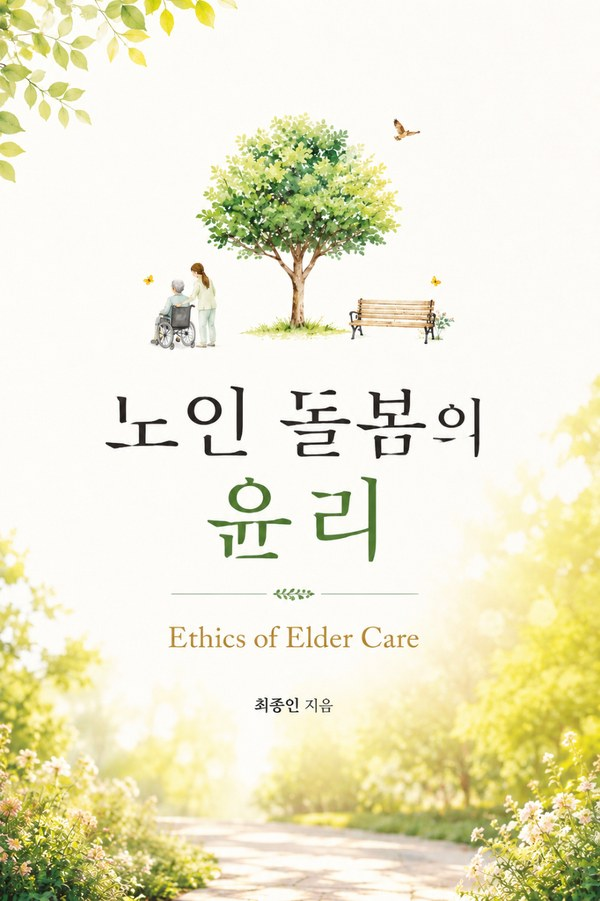

← Back to all books
Ethics of Care

Ethics of Elder Care
Standards of judgment for families, care facilities, and local communities
노인 돌봄의 윤리
Overview
Under the conviction that “a person is a person even in old age,” this ethics guide sets out the standards of judgment that families, nursing facilities, and local communities meet in elder care. It takes up the real concerns of the field: the dignity and self-determination of older adults, honoring the wishes of a person with dementia, the burden carried by family and facility caregivers, privacy, and the withdrawal of life-sustaining treatment and death with dignity.
Table of Contents
- Preface
-
Part 1 Foundations of Care Ethics for a Dignified Old Age
- Chapter 1 Why We Must Speak of Elder Care Ethics Now
- Chapter 2 The Dignity of Older Adults
- Chapter 3 Beneficence and Nonmaleficence
- Chapter 4 Self-Determination
-
Part 2 The Ethics of Care Formed in Relationship
- Chapter 5 Dementia and Decision-Making Capacity
- Chapter 6 The Ethics of Family Care and Facility Care
- Chapter 7 Truth-Telling and Privacy
- Chapter 8 Justice and Fairness
-
Part 3 Care Ethics for the End of Life
- Chapter 9 A Community of Good Care
- Chapter 10 Self-Determination in Death and Death with Dignity
- Chapter 11 Withdrawal of Life-Sustaining Treatment and Palliative Care
- Chapter 12 Ethics in Elder Care Facilities